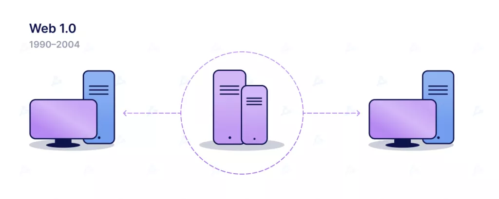
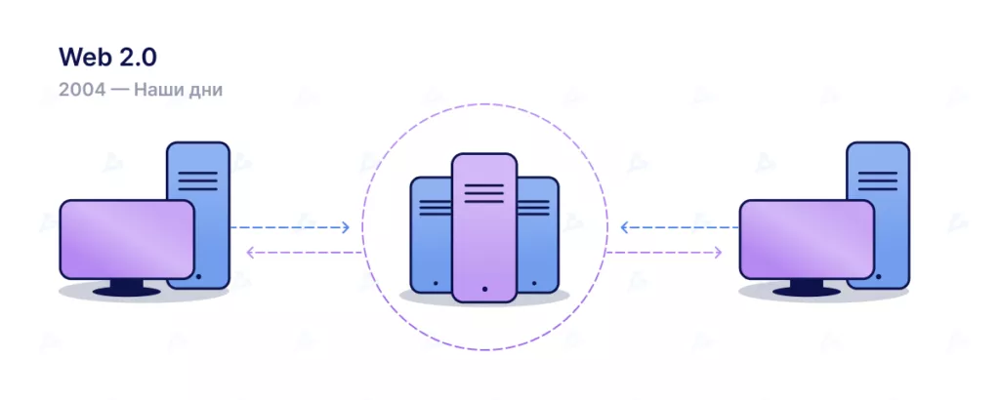
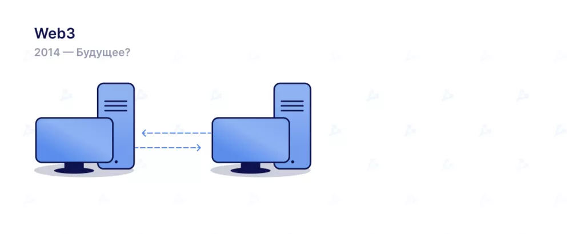

Это технологическая платформа для создания децентрализованных веб-приложений, позволяющих пользователю контролировать свою персональную информацию и другие данные о взаимодействии.
Согласно Statista, в 2022 году число пользователей интернета преодолело рубеж в 5 млрд. Из них аккаунтами в соцсетях обладают 4,7 млрд человек — более половины населения Земли. Значительные сегменты Всемирной паутины подконтрольны крупным технологическим компаниям, которые цензурируют пользовательский контент и зарабатывают огромные деньги на персонализированной рекламе. В ответ на сложившуюся олигополию уверенно развивается интернет нового поколения — Web3. Он зиждется на децентрализации и призван наделить властью простых людей, сделав их полноправными собственниками цифрового контента и устранив цензуру.
Интернет прочно укоренился, став привычным элементом современной жизни. Многим, вероятно, кажется, что он существовал испокон веков. Однако нынешний формат Всемирной паутины разительно отличается от первоначального. Чтобы лучше понять суть и отличительные особенности Web3, следует обратиться к истории. В 1989 году, работая в CERN над внутренней системой обмена документов Enquire, Тим Бернерс-Ли предложил глобальный гипертекстовый проект, ныне известный как Всемирная паутина. Проект был утвержден и реализован. Первая версия Всемирной сети — Web 1.0 — стала приобретать популярность в начале 90-х, после внедрения протокола коммуникации и HTTP. Сайты этой версии представляли собой доступные «только для чтения» статические страницы с текстом, ссылками и изображениями.
Эпоха Web 2.0 началась в 2004 году с появлением социальных сетей, интерактивных платформ и сервисов. Сайты превратились в веб-приложения, которые юзеры стали использовать самостоятельно, взаимодействуя с другими участниками Всемирной паутины. Возникли также облачные сервисы. Крупнейшим провайдером последних является американская компания Amazon.
По их словам, Web 2.0 также породил рекламно-ориентированную модель доходов. В рамках последней пользователи «могли создавать контент, но не владели им и не получали выгоды от его монетизации».
Концепция интернета следующего поколения зародилась еще в 90-е годы. В 2014 году, вскоре после запуска Ethereum, Гэвин Вуд опубликовал статью. В ней он описал Web3 как более децентрализованную версию сети, построенную с использованием блокчейна. Его предложения касались прежде всего изменений в системе хранения данных и повышения уровня анонимности пользователей.
Интерес к новой концепции оживился в 2020-2021 годах на фоне роста популярности децентрализованных приложений и NFT.
Сам термин Web3 довольно размытый, из-за чего в сообществе нередко возникает путаница, а сама идея подвергается критике.
Чтобы лучше понять особенности и выявить основные отличия от предыдущих итераций Всемирной паутины, можно выделить следующие принципы:
Теперь рассмотрим основные киллер-фичи Web3, которые обусловливают важность новой концепции. Web3 беспрецедентным образом наделяет пользователей правом собственности на их цифровые активы. Предположим, вы играете в какую-то Web2-игру. Приобретаемый внутриигровой предмет привязан непосредственно к учетной записи. Если издатель удалит ваш аккаунт — вы утратите его. Если перестанете играть, можете потерять стоимость, инвестированную в цифровой объект Web3 открывает возможность прямого владения объектами посредством невзаимозаменяемых токенов. В этом случае ни создатели игры, ни кто-либо другой не может лишить вас цифровой собственности. Если вы прекратите играть, то сможете продать внутриигровые предметы на рынке, возместив затраченные средства. Платформы Web 2.0 требуют доверия к себе от создателей контента. Последние также должны следовать определенным правилам. Важная отличительная особенность Web3-платформ — устойчивость к цензуре. Помимо надежного владения данными в новой экосистеме, вы также можете выступать в роли собственника платформ. Для этого используются токены управления, выполняющие схожие с акциями компаний функции. ДАО позволяют каждому принимать участие в развитии проектов, голосуя за самые различные решения — от интеграции с новым блокчейнами до изменений в монетарной политике. Признаки ДАО есть у многих Web3-сообществ. Последние, впрочем, различаются по степени децентрализации и автоматизации посредством кода. У большинства пользователей Всемирной сети есть аккаунты на крупных Web2-платформах вроде Twitter, YouTube, Facebook или Reddit.
Web3 решает подобные проблемы, предоставляя пользователям возможность контролировать свою цифровую идентичность посредством инструментов вроде ENS. Платежная инфраструктура Web 2.0 полагается на традиционные финансовые учреждения и процессинги, отсекая людей без банковских счетов и живущих в подсанкционных странах. Web3-приложения используют криптовалюты и токены, для взаимодействия с которыми нужен лишь браузер и соответствующее расширение вроде MetaMask.
Рассказывая о преимуществах «нового интернета», справедливо упомянуть о недостатках и проблемах, все еще требующих решения. Важные функции вроде логина посредством Web3-кошелька бесплатны и давно доступны. Однако стоимость транзакций, особенно в сети Ethereum, относительно высока. Это может служить препятствием массовому принятию криптовалют и dapps в развивающихся странах. Тем не менее разработчики неустанно борются с проблемой масштабирования, из-за которой растет цена газа в периоды повышенной ончейн-активности. Создаются и дорабатываются решения второго уровня (L2). В дорожной карте Ethereum предусмотрен ряд прочих оптимизаций, которые должны сделать транзакции доступнее и снизить стоимость взаимодействия со сложными смарт-контрактами. Другая проблема — пользовательский опыт, сопряженный с достаточно высокими техническими барьерами. Участникам сети нужно понимать, что такое приватный ключ и почему его следует надежно хранить втайне, разбираться в основах кибербезопасности и ориентироваться в интерфейсах децентрализованных приложений. Разработчики не сидят сложа руки, создавая более интуитивные сервисы. Однако предстоит проделать еще много работы, прежде чем Web3 станет по-настоящему массовым явлением. Экосистема «нового интернета» стремительно развивается, но до сих пор во многом полагается на централизованную инфраструктуру (GitHub, Infura и т. д.). Некоторые сервисы вроде Lido и Flashbots пытаются исправить это, однако для создания надежного фундамента не требующих доверия Web3-приложений нужны значительные усилия и время. Например, глава Animoca Brands убежден, что для «построения 3D-интернета» на основе метавселенных потребуется 10 лет или более. По его словам, виртуальные миры нуждаются в совместимости между контентом. Основатель ConsenSys и один из создателей Ethereum Джозеф Любин назвал сегодняшние виртуальные миры интернетом 1994 года. При этом он считает, что через много лет метавселенные изменят повседневную жизнь. CEO Aave Стани Кулечов убежден, что Twitter не перейдет на блокчейн. По его мнению, Web3-соцмедиа станут не обновлением текущих платформ, а совместимой сетью новых проектов.
Web3 — молодая, развивающаяся и обширная экосистема. Хотя истоки «нового интернета» ведут в 90-е годы, концепция стала по-настоящему актуальной относительно недавно. Крупные компании инвестируют значительные средства, экспериментируют с NFT и метавселенными, оценивая их потенциал. Разработчики трудятся над решениями для масштабирования и децентрализованного хранения данных, улучшают пользовательский опыт приложений. Повсеместно тестируются новые формы управления и организации сообществ, внедряется SSI. Однако на пути к массовому принятию Web3 все еще немало преград. Одна из важных проблем — зависимость от централизованных платформ. Многие проекты пытаются исправить это, но для построения надежного фундамента для не требующих доверия Web3-приложений требуются значительные усилия и время.